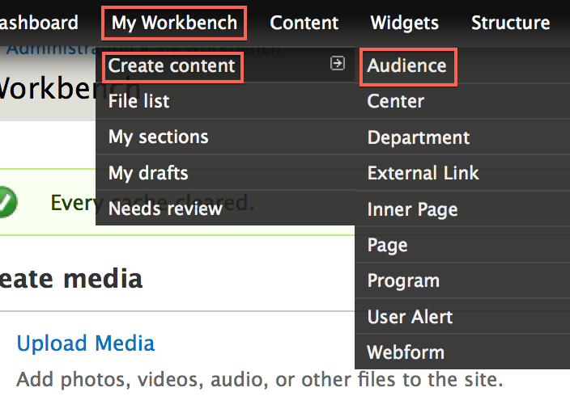
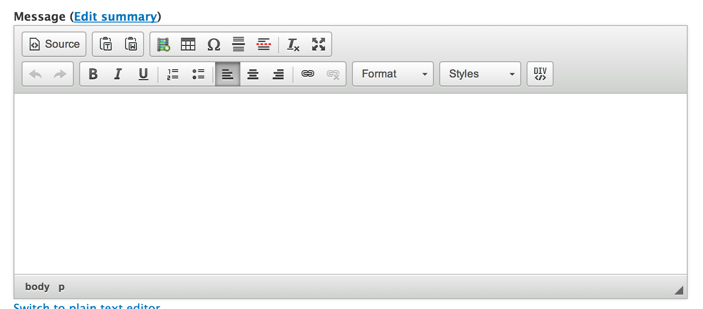

Audiences are a content type that represent the audiences inside your college.
Each audience created populates the Audience menu.
In the Administration Menu, navigate to:
My Workbench > Create content > Audience

Enter the name of the Audience.

Enter the Message of this audience. This is the main copy of your page.

Using the editor toolbar, you can add images or format your copy.

Resources are links to external (or internal) pages that you may find helpful for students.

Choose a Menu link title which will be the name of the menu item displayed.

More detail on the remaining items in this section can be found in the Menu settings documentation.
While viewing the audience, click the New draft tab located at the top of the page.

Updating a audience is very similar to Creating a audience. Make the changes you want and then click the Save button located at the bottom of the form.

While viewing the audience, click the New draft tab located at the top of the page.
At the bottom of the New draft form, click Delete.

Confirm the deletion by clicking the Delete button.

On the audience you want to change the layout for, click the Change this layout button located at the bottom of the page.

Select the layout you would like for this audience.

Move content around and once you are satisfied, click Save.

On the audience you want to customize, click the Customize this page button located at the bottom of the page.

Make the changes that you want.
For a more detailed tutorial, please read Customizing Pages
Once you are satisfied with the changes, click Save.

Created on January 7, 2014
Last modified on January 9, 2014
Authored by Gray Sadler